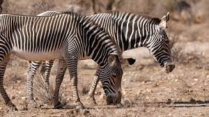

An image is a visual representation of something. It can be two-dimensional, three-dimensional, or somehow otherwise feed into the visual system to convey information. An image can be an artifact, such as a photograph or other two-dimensional picture, that resembles a subject. In the context of signal processing, an image is a distributed amplitude of color(s).[1]
In optics, the term "image" may refer specifically to a 2D image.
An image does not have to use the entire visual system to be a visual representation. A popular example of this is of a greyscale image, which uses the visual system's sensitivity to brightness across all wavelengths, without taking into account different colors. A black and white visual representation of something is still an image, even though it does not make full use of the visual system's capabilities.
Images are typically still, but in some cases can be moving or animated.

Wildlife refers to undomesticated animal species, but has come to include all organisms that grow or live wild in an area without being introduced by humans.[1] Wildlife was also synonymous to game: those birds and mammals that were hunted for sport. Wildlife can be found in all ecosystems. Deserts, plains, grasslands, woodlands, forests, and other areas, including the most developed urban areas, all have distinct forms of wildlife. While the term in popular culture usually refers to animals that are untouched by human factors, most scientists agree that much wildlife is affected by human activities.[2] Some wildlife threaten human safety, health, property, and quality of life. However, many wild animals, even the dangerous ones, have value to human beings. This value might be economic, educational, or emotional in nature.
Humans have historically tended to separate civilization from wildlife in a number of ways, including the legal, social, and moral senses. Some animals, however, have adapted to suburban environments. This includes such animals as feral cats, dogs, mice, and rats. Some religions declare certain animals to be sacred, and in modern times, concern for the natural environment has provoked activists to protest against the exploitation of wildlife for human benefit or entertainment.
Global wildlife populations have decreased by 68% since 1970 as a result of human activity, particularly overconsumption, population growth, and intensive farming, according to a 2020 World Wildlife Fund's Living Planet Report and the Zoological Society of London's Living Planet Index measure, which is further evidence that humans have unleashed a sixth mass extinction event.[3][4] According to CITES, it has been estimated that annually the international wildlife trade amounts to billions of dollars and it affects hundreds of millions of animal and plant specimen.[5]

Wildlife trade refers to the products that are derived from non-domesticated animals or plants usually extracted from their natural environment or raised under controlled conditions. It can involve the trade of living or dead individuals, tissues such as skins, bones or meat, or other products. Legal wildlife trade is regulated by the United Nations' Convention on International Trade in Endangered Species of Wild Fauna and Flora (CITES), which currently has 184 member countries called Parties.[6] Illegal wildlife trade is widespread and constitutes one of the major illegal economic activities, comparable to the traffic of drugs and weapons.[7]
Wildlife trade is a serious conservation problem, has a negative effect on the viability of many wildlife populations and is one of the major threats to the survival of vertebrate species.[8]The illegal wildlife trade has been linked to the emergence and spread of new infectious diseases in humans, including emergent viruses.[9][10] Global initiative like the United Nations Sustainable Development Goal 15 have a target to end the illegal supply of wildlife.[11]
Wildlife has long been a common subject for educational television shows. National Geographic Society specials appeared on CBS since 1965, later moving to American Broadcasting Company and then Public Broadcasting Service. In 1963, NBC debuted Wild Kingdom, a popular program featuring zoologist Marlin Perkins as host. The BBC natural history unit in the United Kingdom was a similar pioneer, the first wildlife series LOOK presented by Sir Peter Scott, was a studio-based show, with filmed inserts. David Attenborough first made his appearance in this series, which was followed by the series Zoo Quest during which he and cameraman Charles Lagus went to many exotic places looking for and filming elusive wildlife—notably the Komodo dragon in Indonesia and lemurs in Madagascar.[14] Since 1984, the Discovery Channel and its spinoff Animal Planet in the US have dominated the market for shows about wildlife on cable television, while on Public Broadcasting Service the NATURE strand made by WNET-13 in New York and NOVA by WGBH in Boston are notable.
Wildlife tourism is an element of many nations' travel industry centered around observation and interaction with local animal and plant life in their natural habitats. While it can include eco- and animal-friendly tourism, safari hunting and similar high-intervention activities also fall under the umbrella of wildlife tourism. Wildlife tourism, in its simplest sense, is interacting with wild animals in their natural habitat, either by actively (e.g. hunting/collection) or passively (e.g. watching/photography). Wildlife tourism is an important part of the tourism industries in many countries including many African and South American countries, Australia, India, Canada, Indonesia, Bangladesh, Malaysia, Sri Lanka and Maldives among many. It has experienced a dramatic and rapid growth in recent years worldwide and many elements are closely aligned to eco-tourism and sustainable tourism.
The oldest classical British and Latin writing had little or no space between words and could be written in boustrophedon (alternating directions). Over time, text direction (left to right) became standardized. Word dividers and terminal punctuation became common. The first way to divide sentences into groups was the original paragraphos, similar to an underscore at the beginning of the new group.[1] The Greek parágraphos evolved into the pilcrow (¶), which in English manuscripts in the Middle Ages can be seen inserted inline between sentences.
Indented paragraphs demonstrated in the US Constitution.Ancient manuscripts also divided sentences into paragraphs with line breaks (newline) followed by an initial at the beginning of the next paragraph. An initial is an oversized capital letter, sometimes outdented beyond the margin of the text. This style can be seen, for example, in the original Old English manuscript of Beowulf. Outdenting is still used in English typography, though not commonly.[2] Modern English typography usually indicates a new paragraph by indenting the first line. This style can be seen in the (handwritten) United States Constitution from 1787. For additional ornamentation, a hedera leaf or other symbol can be added to the inter-paragraph white space, or put in the indentation space.A second common modern English style is to use no indenting, but add vertical white space to create "block paragraphs." On a typewriter, a double carriage return produces a blank line for this purpose; professional typesetters (or word processing software) may put in an arbitrary vertical space by adjusting leading. This style is very common in electronic formats, such as on the World Wide Web and email. Wikipedia itself employs this format.
Intoduction
Real estate is property consisting of land and the buildings on it, along with its natural resources such as crops, minerals or water; immovable property of this nature; an interest vested in this (also) an item of real property, (more generally) buildings or housing in general.
History
The natural right of a person to own property as a concept can be seen as having roots in Roman law as well as Greek philosophy.[4] The profession of appraisal can be seen as beginning in England during the 1500s as agricultural needs required land clearing and land preparation.
Real estate and the environment
Real estate can be valued or devalued based on the amount of environmental degradation that has occurred. Environmental degradation can cause extreme health and safety risks. There is a growing demand for the use of site assessments (ESAs) when valuing a property for both private and commercial real estate.[17]